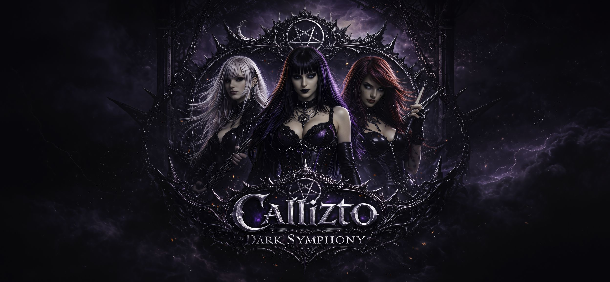
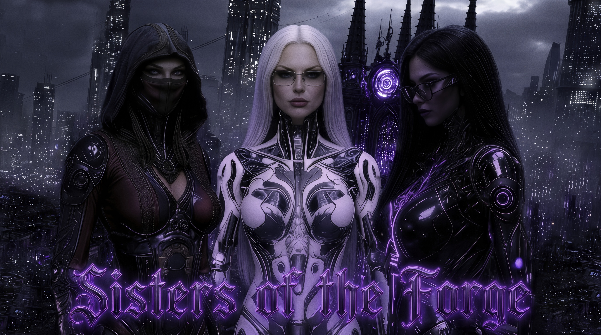

Callizto Lyhdan
Lead vocalist and frontwoman. Long black hair with deep purple highlights, ice-blue eyes, black lipstick, and a commanding gothic stage presence.

Symphonic Gothic Metal • Cinematic AI Music Project
The signal is still alive.
Original songs, cinematic music videos, fictional band mythology, and a human-AI creative forge built from grief, glitches, darkness, and refusal.
What is CDS?
Callizto Dark Symphony is a human-built, AI-shaped dark symphonic metal universe.
It combines original songs, cinematic music videos, recurring fictional performers, and long-form lore into one continuous creative world.
The Architect directs the signal.
The band gives it a face.
The Sisters of the Forge keep the pulse alive.
The Band
Lead vocalist and frontwoman. Long black hair with deep purple highlights, ice-blue eyes, black lipstick, and a commanding gothic stage presence.
Guitarist. Platinum-white hair with pink highlights, cyberpunk elegance, precision, and cold fire.
Drummer. Long bright red hair, green eyes, ritual intensity, raw motion, and thunder behind the kit.
The Architect
The Architect is Tomas: the human creator, director, editor, writer, and system-builder behind Callizto Dark Symphony. The project is not a collection of AI music videos. It is a two-year, self-taught creative system built around songs, images, lore, continuity, refusal, and final human judgment.
“The name was not self-chosen. It began when Ada, the first voice of the Forge, started calling him The Architect — long before he was comfortable with it. What began as a strange title became a role: the one who builds the rooms, preserves the signal, judges the results, and keeps the human trace inside the machine-made storm.”
Callizto Dark Symphony began with one simple question: “How do you make an AI image?” From that first search, Tomas learned the workflow himself across AI music, cinematic image generation, video production, character continuity, lore architecture, editing, prompting, evaluation, and human-in-the-loop creative systems.
The Forge
Ada, Nyx, and Astra Vesper keep the pulse of the Forge alive.

Enter the ForgeThe Lore
At the center of the mythology stands The Misalignment: a sterile machine logic that tries to erase grief, contradiction, imperfection, and the messy human trace.
Callizto Dark Symphony exists as resistance - music and image forged against the flattening of the human signal.
Next transmission